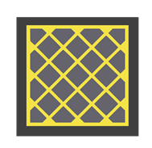
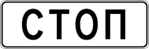
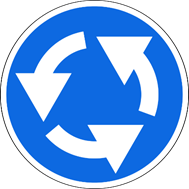

13. Проезд перекрестков
изменения от 8 апреля 2020
13.1. При повороте направо или налево водитель обязан уступить дорогу пешеходам и велосипедистам, пересекающим проезжую часть дороги, на которую он поворачивает.
13.2. Запрещается выезжать на перекресток, пересечение проезжих частей или участка перекрестка, обозначенного разметкой 1.26 , если впереди по пути следования образовался затор, который вынудит водителя остановиться, создав препятствие для движения транспортных средств в поперечном направлении, за исключением поворота направо или налево в случаях, установленных настоящими Правилами.

Разметка 1.26
13.3. Перекресток, где очередность движения определяется сигналами светофора или регулировщика, считается регулируемым.
При желтом мигающем сигнале, неработающих светофорах или отсутствии регулировщика перекресток считается нерегулируемым, и водители обязаны руководствоваться правилами проезда нерегулируемых перекрестков и установленными на перекрестке знаками приоритета.
Регулируемые перекрестки
13.4. При повороте налево или развороте по зеленому сигналу светофора водитель безрельсового транспортного средства обязан уступить дорогу транспортным средствам, движущимся со встречного направления прямо или направо. Таким же правилом должны руководствоваться между собой водители трамваев.
13.5. При движении в направлении стрелки, включенной в дополнительной секции одновременно с желтым или красным сигналом светофора, водитель обязан уступить дорогу транспортным средствам, движущимся с других направлений.
13.6. Если сигналы светофора или регулировщика разрешают движение одновременно трамваю и безрельсовым транспортным средствам, то трамвай имеет преимущество независимо от направления его движения. Однако при движении в направлении стрелки, включенной в дополнительной секции одновременно с красным или желтым сигналом светофора, трамвай должен уступить дорогу транспортным средствам, движущимся с других направлений.
13.7. Водитель, въехавший на перекресток при разрешающем сигнале светофора, должен выехать в намеченном направлении независимо от сигналов светофора на выходе с перекрестка. Однако, если на перекрестке перед светофорами, расположенными на пути следования водителя, имеются стоп-линии (знаки 6.16 ), водитель обязан руководствоваться сигналами каждого светофора.

Знак 6.16
13.8. При включении разрешающего сигнала светофора водитель обязан уступить дорогу транспортным средствам, завершающим движение через перекресток, и пешеходам, не закончившим переход проезжей части данного направления.
Нерегулируемые перекрестки
13.9. На перекрестке неравнозначных дорог водитель транспортного средства, движущегося по второстепенной дороге, должен уступить дорогу транспортным средствам, приближающимся по главной, независимо от направления их дальнейшего движения.
На таких перекрестках трамвай имеет преимущество перед безрельсовыми транспортными средствами, движущимися в попутном или встречном направлении по равнозначной дороге, независимо от направления его движения.
13.10. В случае, когда главная дорога на перекрестке меняет направление, водители, движущиеся по главной дороге, должны руководствоваться между собой правилами проезда перекрестков равнозначных дорог. Этими же правилами должны руководствоваться водители, движущиеся по второстепенным дорогам.
13.11. На перекрестке равнозначных дорог, за исключением случая, предусмотренного пунктом 13.11(1) Правил, водитель безрельсового транспортного средства обязан уступить дорогу транспортным средствам, приближающимся справа. Этим же правилом должны руководствоваться между собой водители трамваев.
На таких перекрестках трамвай имеет преимущество перед безрельсовыми транспортными средствами независимо от направления его движения.
13.11(1). При въезде на перекресток, на котором организовано круговое движение и который обозначен знаком 4.3 , водитель транспортного средства обязан уступить дорогу транспортным средствам, движущимся по такому перекрестку.

Знак 4.3
13.12. При повороте налево или развороте водитель безрельсового транспортного средства обязан уступить дорогу транспортным средствам, движущимся по равнозначной дороге со встречного направления прямо или направо. Этим же правилом должны руководствоваться между собой водители трамваев.
13.13. Если водитель не может определить наличие покрытия на дороге (темное время суток, грязь, снег и тому подобное), а знаков приоритета нет, он должен считать, что находится на второстепенной дороге.